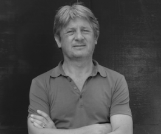

ACM International Conference on Information Technology for Social Good (GoodIT 2021)
9-11 September 2021, Rome, Italy
Keynotes
Enrico Nardelli
| Short Bio: Enrico Nardelli is full professor of Informatics at University of Rome "Tor Vergata" and the President of Informatics Europe, the association representing Informatics university departments and research labs in Europe. He is member of the ACM Europe Council and represents his university in the Management Board of CINI (National Interuniversity Consortium in Informatics). Since 2014 he coordinates "Programma il Futuro", a project run by CINI, in accordance with MIUR (Italian Ministry of Education, University and Research), to introduce in Italian schools the basic concepts of Informatics as a scientific discipline. The project is present in 80% of the Italian schools and is followed by 3 million students. He is the director of the national laboratory "Informatics and School" of CINI and member of the Steering Committee of the "Informatics for All" coalition, advocating the introduction of Informatics as component of fundamental education in all schools in Europe. His current research activity is Informatics Education and interdisciplinary study of Informatics systems and their social impact, within the Link&Think Research Lab and the CINI National laboratory "Informatics and Society". Previously he did research in various fields of Informatics, from algorithms to databases, from geographical information systems to man-machine interaction and cooperative information systems. He also carries out dissemination activity towards the general public regarding Informatics education and the role of Informatics in the digital society. |
Thursday, September 9th, 2021 Educating in socially responsible Informatics: the next frontier. Our contemporary society is in the middle of an extraordinary transformation, pushed by digital innovations. From mobile devices to autonomous decision-making systems, digital technologies make up the communication and social infrastructure and fill every parcel of space and time, affecting our lives both professionally and personally. For the first time in the history of humanity, cognitive functions are carried out by machines. But their activity is completely detached from the human nature, whose comprehension is beyond their capabilities. It is therefore the duty of their creators, even more than before, to ensure their actions respect human rights and values of a democratic society, much in the same way we require that any industrial artefact respects safety regulations. In this context, a reflection on a possible revision of the way we prepare informatics students for their professional life is highly desirable. Our students should be educated in a more multi-disciplinary way and, beyond knowing about algorithms and automata, networks and concurrency, should develop an appreciation for human and social viewpoints regarding digital systems.
Rob van Kranenburg
|  | Short Bio: Rob van Kranenburg is the Founder of Council_IoT and #iotday He wrote The Internet of Things. A critique of ambient technology and the all-seeing network of RFID (Network Notebooks 02, Institute of Network Cultures). Together with Christian Nold he published Situated Technologies Pamphlets 8: The Internet of People for a Post-Oil World. Rob is co-editor of Enabling Things to Talk: Designing IoT solutions with the IoT Architectural Reference Model (Springer Open Access). He works as Ecosystem Manager for the EU project Next Generation Internet. |
Friday, September 10th, 2021 A positive vision of connectivity for society About two decades I was very naïve. I used to think that a full imaginary of technology was founded on empirical knowledge. I taught narrative principles and professed a firm belief in the emancipatory drive of non-reciprocity, as seen in the internet protocol and the web. I had a rethink. When will our old book paradigm institutions come to understand that new digital tech is a full frontal attack and not just another iteration in democratic self-emancipation? Look at all the raised voices of citizens and small initiatives, protesting the skewed power structure consolidating its power since the Industrial Revolution. I founded the #IoT Council in 2009 and the #Iotday in 2010. I imagined a twenty-year plus plan, yet in fact, it took only a decade for the tooling enabled by speed, flow, and success indicator changing generic nature of the Internet to fuel an internet of things. When the Internet of Things was coined, every technological artifact, program and vision, got caught up by feelings of general distrust in both Big Tech and Big Government. People felt powerless, having no choice but to pass between Scylla (billionaires harvesting data and creating new addiction-prone applications) and Charybdis (a hollowed-out state going obsessive-compulsive with behavioral control). Everything was supposedly designed to be ‘efficient’ or ‘optimizing’ or creating ‘transparency’. Either Scylla or Charybdis. A decade ago the correct criticism of thinkers like Adam Greenfield and the Transition Town Movement found severe faults with the smart city projects. The smart cities are now showing failure — see Sidewalk Labs. But a viable alternative beyond ‘disconnecting’ is not given. Escape is possible only for affluent individuals and gated communities. I see a plethora of (low fee and fee-less) components from crypto (think of Cardano, IoTa building real use cases). On identity, I see Self-Sovereign Identity schemes on the rise, many local forms of organizing. Think of the massive success of Arduino, Libelium. Many civil society organizations are facilitating edge solutions that bring analytics and purpose close to local data gathering. I see innovative new ways of funding infrastructure like Invested Public Network. Open platforms and processes can be designed to allow citizens, businesses, and organizations. Citizens can co-invest directly into projects that upgrade local public infrastructure, that adapt their home place to climate shifts, that bridge equity gaps. Crowdfunding can overcome limited borrowing capacity, and shared currency commitments can shape and sustain a healthy community. I recently published an inter-disciplinary urban renewal vision, for connectivity as a win win society. We imagined forward-thinking social entrepreneurship and happy communities of people describing ‘cold spots’ and not only hot zones or nothing. I see 6G governance as including Cyber-physical Systems. My talk will bring a positive version of Stafford Beer's Cybersyn, since today we also have the tools to make connectivity truly decentralized and much more distributed.
van Kranenburg R. et al. (2020) Future Urban Smartness: Connectivity Zones with Disposable Identities. In: Augusto J.C. (eds) Handbook of Smart Cities. Springer, Cham. https://doi.org/10.1007/978-3-030-15145-4_56-1